Alcohols and organic redox
Week 3 · Follow the carbon and check the evidence
What will you be able to explain?
- Connect alcohols with aldehydes, ketones and acids.
- Draw carbonyl reduction as addition then proton transfer.
- Calculate a limiting amount with explicit units.
Predict before the worked drawing
Draw ethanol and predict two successive oxidation targets with the same carbon skeleton. Why might an aldehyde target require controlled conditions?
A primary alcohol has two oxidation targets
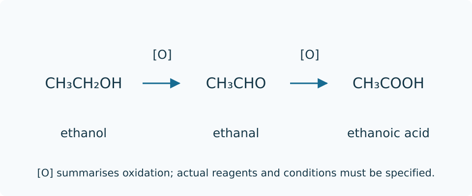
Ethanol can be oxidised to ethanal and then ethanoic acid.
Controlling conditions matters when the intended product is the aldehyde. A transformation arrow is not a complete protocol.
Extend the same local transformation
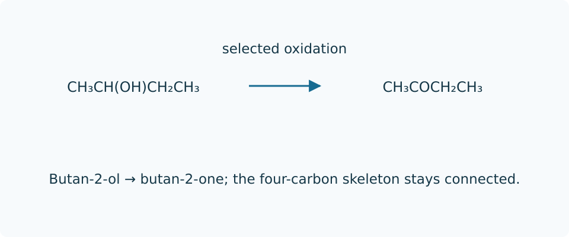
Extend the same local transformation
Find the original OH-bearing carbon in butan-2-ol and keep its methyl/ethyl neighbours attached.
Reject an unintended aldehyde
Extend the same local transformation
Why would butanal be the wrong product for this simple secondary-alcohol oxidation?
A secondary alcohol gives a ketone
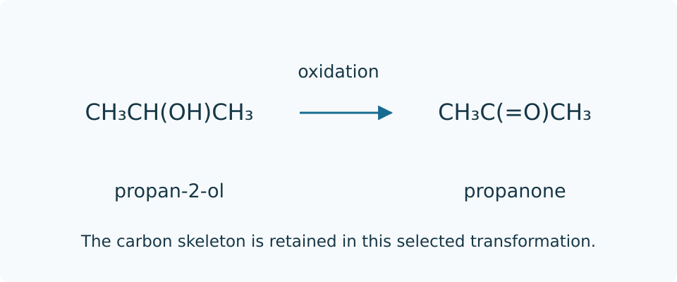
Propan-2-ol oxidation gives propanone with the carbon skeleton retained.
Identify the carbon bearing OH. Its C–H bond and O–H bond are replaced overall as the carbonyl forms.
Use the aldehyde reduction pattern
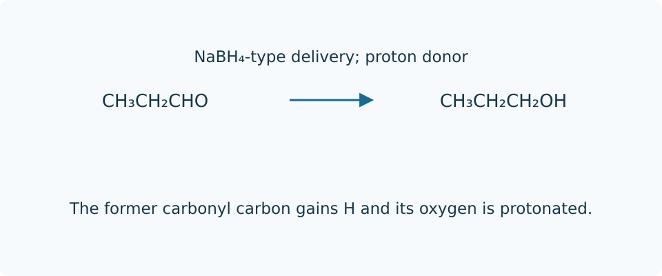
Use the aldehyde reduction pattern
Show hydride-equivalent addition first, then write the protonated neutral product.
Audit the extra hydrogens
Use the aldehyde reduction pattern
Which new H bonds to carbon and which comes from the proton donor to oxygen?
Predict before the worked drawing
Compare the OH-bearing carbon in a secondary and tertiary alcohol. What H is missing in the tertiary case?
Why is the tertiary case different?
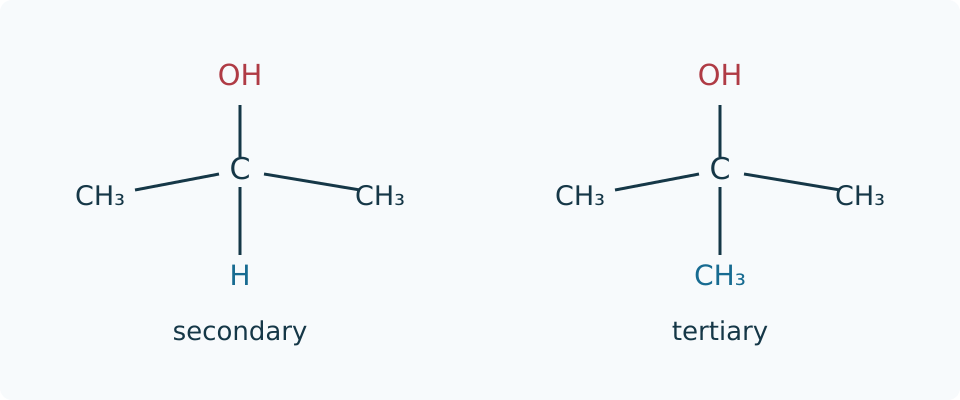
A secondary alcohol has a hydrogen on its OH-bearing carbon; a tertiary one has three carbon substituents instead.
A tertiary alcohol lacks the required carbinol C–H bond for the simple alcohol → carbonyl transformation without C–C cleavage.
Compare a secondary carbon before and after
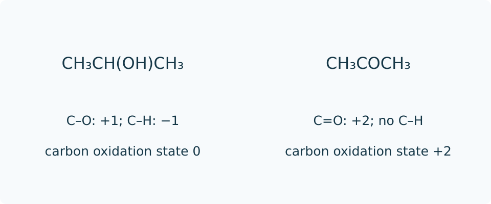
Compare a secondary carbon before and after
Calculate the OH-carbon assignment in propan-2-ol using C–O+1, C–H−1, C–C0.
Explain the two-unit change
Compare a secondary carbon before and after
Calculate the ketone carbon value and identify why oxidation is not just “adding an O atom”.
Predict before the worked drawing
For the changing carbon, use C–O bond order +1, C–H −1 and C–C 0. Predict the values for ethanol, ethanal and ethanoic acid.
Use bond accounting as a check
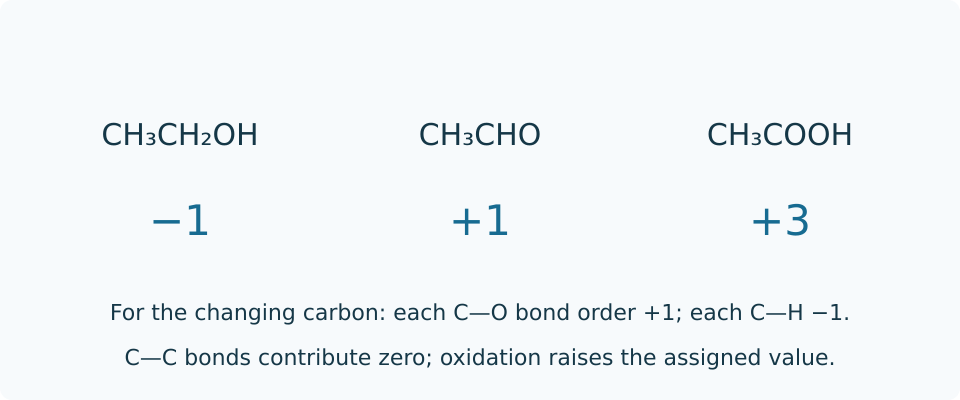
The changing carbon is assigned oxidation states minus one in ethanol, plus one in ethanal and plus three in ethanoic acid.
Assign C–O bond order +1 and C–H bond −1 to the carbon; C–C contributes zero. Oxidation raises the value.
Do not compare raw amounts only
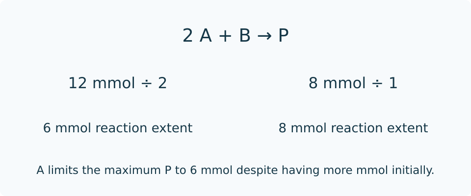
Do not compare raw amounts only
For2A+B→P with 12 mmol A and8 mmol B, compare each allowable reaction extent.
Change the coefficient mentally
Do not compare raw amounts only
If the balanced equation instead were A+B→P with the same amounts, which reagent would limit and why?
Predict before the worked drawing
Draw simplified hydride-equivalent addition to propanone. What is the immediate oxygen charge before work-up?
Reduction starts with delivery of a hydride equivalent
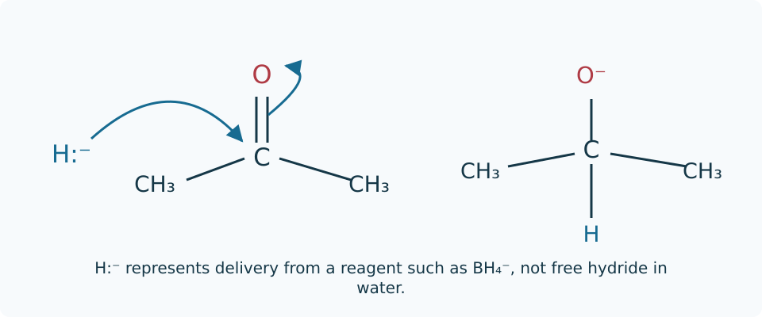
A hydride-equivalent pair forms a C–H bond at a ketone while its carbonyl pi pair moves onto oxygen.
A reagent such as NaBH₄ can reduce selected aldehydes and ketones. First draw the alkoxide.
Use a theoretical pure-product maximum
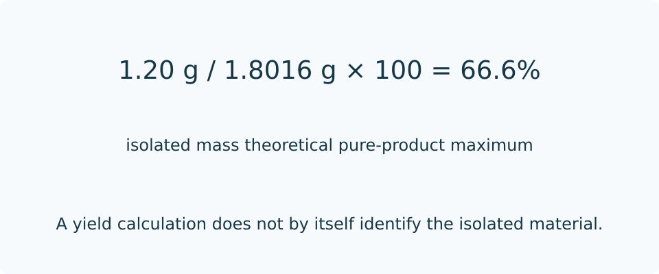
Use a theoretical pure-product maximum
Compute the isolated mass percentage for 1.20 g relative to 1.8016 g. What assumptions enter the numerator?
Separate yield from identity
Use a theoretical pure-product maximum
Could the same mass include solvent or impurity? What independent evidence would you request?
Predict before the worked drawing
Use H₂O to protonate the alkoxide. Write the product made from the water instead of erasing its original O–H bond.
An alkoxide still needs a proton
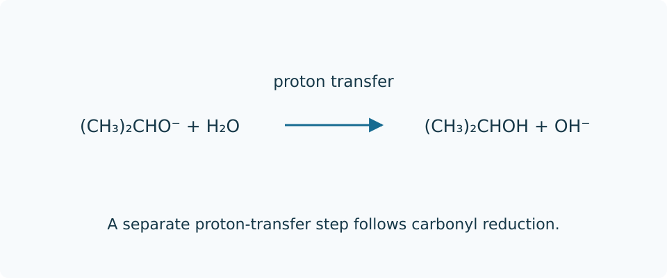
A separate water proton-transfer step converts the alkoxide into a neutral alcohol.
Specify the proton donor. Add the conjugate base to conserve charge and H atoms.
Investigate a mass above the maximum
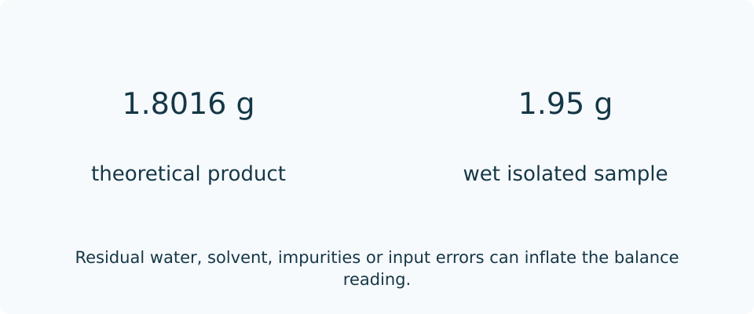
Investigate a mass above the maximum
Compare a1.95 g wet sample with the 1.8016 g stoichiometric maximum. What assumption has failed?
Propose a concrete corrective check
Investigate a mass above the maximum
Name checks on drying/sample composition and original input measurements before reporting yield.
Predict before the worked drawing
Compare OH⁻ with water as a leaving group. What acid–base change can activate an alcohol?
Alcohol chemistry often begins with activation
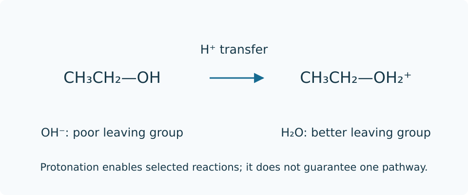
An alcohol can be protonated to an oxonium species from which water is a better leaving group than hydroxide.
OH⁻ is generally a poor leaving group. Protonation changes what can depart.
Ask which denominator belongs to each claim
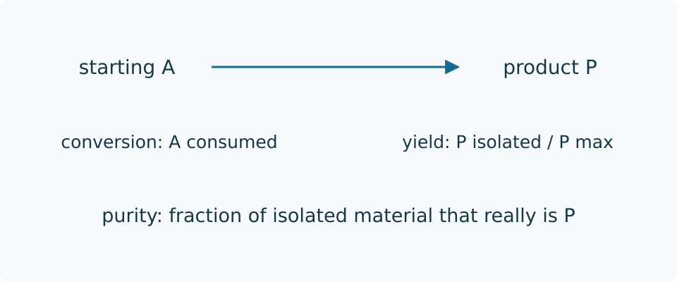
Ask which denominator belongs to each claim
Define conversion, isolated yield and purity using the quantities shown.
Explain one realistic mismatch
Ask which denominator belongs to each claim
How could starting material disappear while isolated yield remains low?
Predict before the worked drawing
A proposed oxidation sample loses broad alcohol O–H absorption and gains a strong carbonyl band. What is supported, and what is still unproved?
Use evidence to test the transformation

Simulated offset IR traces contrast a broad alcohol O–H region with a carbonyl absorption near 1720 inverse centimetres.
A new carbonyl band supports a functional-group change. A missing broad O–H band is useful but not a complete identification.
Choose direction from the desired structure
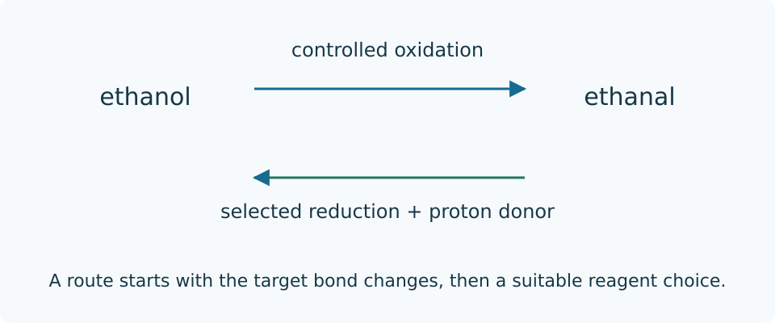
Choose direction from the desired structure
Read the ethanol/ethanal map and choose the supplied reduction route when the target is ethanol.
Keep the scope explicit
Choose direction from the desired structure
Why does the aldehyde/ketone rule not automatically justify reducing every ester or amide with the same reagent?
Choose the desired functional group first
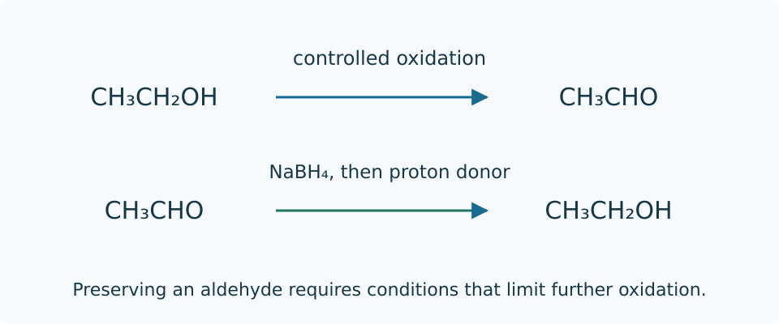
Ethanol to ethanal is an oxidation, while ethanal to ethanol can use NaBH4 followed by proton donation.
Say which bonds change, then justify a suitable transformation. Conditions must match the target and other functional groups.
Predict before the worked drawing
A balanced 1:1 teaching reaction has10.0 mmol of one reagent and15.0 mmol of the other. Predict the limiting amount before using a balance or R.
Calculate a maximum before an isolated yield
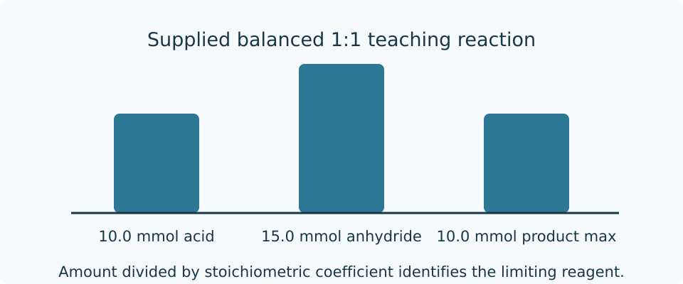
A supplied one-to-one synthesis with 10 mmol acid and 15 mmol anhydride has a 10 mmol product maximum.
Compare n/stoichiometric coefficient, not reagent masses. Use the balanced equation supplied for the actual experiment.
A reagent has a scope
This course uses selected transformations. Predict aldehyde/ketone reduction by NaBH₄ under suitable conditions; do not silently extend that claim to ordinary esters or amides.
Other functional groups and conditions can change the outcome.
Yield, conversion and purity differ
Isolated yield: isolated product amount / theoretical maximum.
Conversion: fraction of a starting material consumed.
Purity: fraction of the isolated material that is the desired substance.
One number cannot establish all three.
Chemical explanation before calculation
For a secondary alcohol, predict the oxidation product and explain the local bond changes.
For a balanced 1:1 synthesis with 10 and 15 mmol reagents, predict the limiting reagent before opening R.
Use the same reasoning in practice
Complete the practice and worked examples, then the self-check.
Optional textbook support: selected Solomons chapter 11–12 sections. The reading guide explains the provisional book mapping.